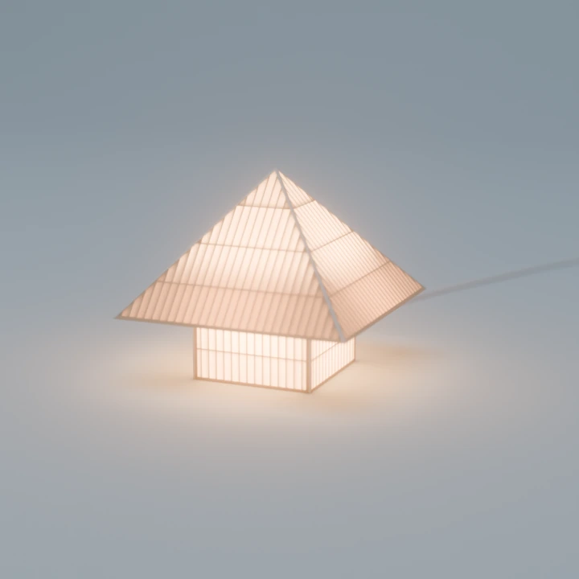
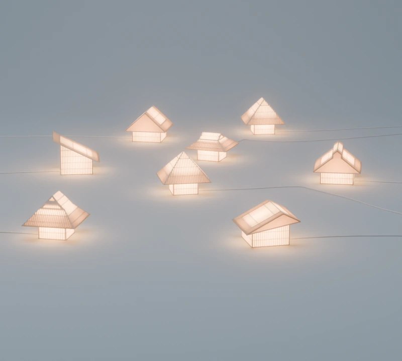
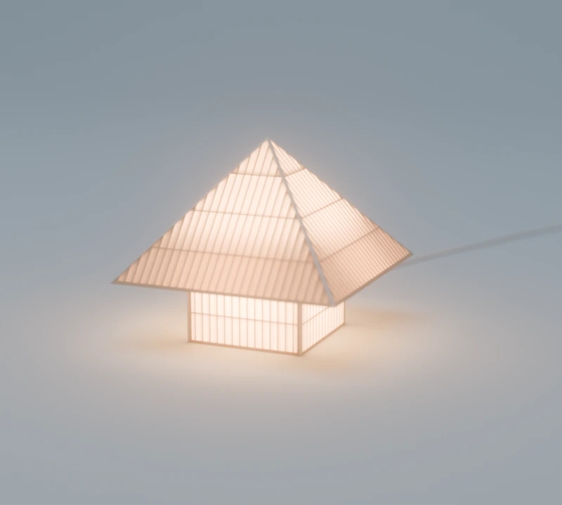
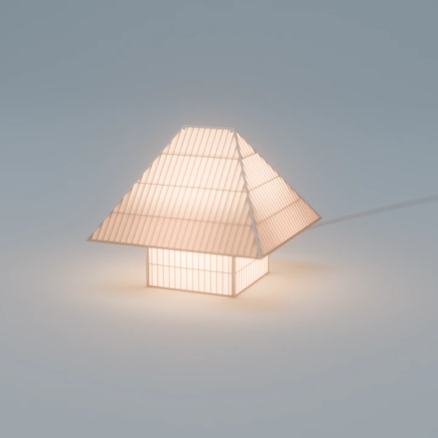

Hogyo
方形 ・ いま試作している形
四つの屋根面が、ひとつの頂に集まる方形。細い骨格に和紙を張り、屋根の輪郭と、障子越しのような柔らかな光を重ねることを目指しています。
Karan Products / Series
屋根のあかり
制作中
屋根のかたちを、暮らしの灯りに。


Statement
障子を通る光のような、やわらかな明るさを、いまの住まいにも取り入れたい。
日本の住まいから、見慣れた屋根の形が少しずつ遠ざかっているように感じています。
方形、寄棟、入母屋。
それぞれの輪郭を、小さな灯りとして暮らしのそばに残せないだろうか。
そんな思いから、YANEをつくっています。
屋根の形を細い骨格で立ち上げ、和紙を張る。
紙を通った光と、その向こうに浮かぶ線で、小さな屋根の表情をつくりたいと考えています。
昼は、静かな屋根のかたちとして。
夜は、部屋の片隅をやわらかく照らす灯りとして。
YANEは、日本の屋根と障子の光を、これからの住まいへつなぐシェードです。
Frame and washi
枠は、細いひごを集めた形を3Dプリンターで刷っています。
和紙は、屋根と壁の形に合わせて切り、一枚ずつ手で張っていきます。
いまは、方形の枠を試しに刷り、和紙を張る段階です。
紙を張った実物の光り方は、これから確かめます。
Roofs

方形 ・ いま試作している形
四つの屋根面が、ひとつの頂に集まる方形。細い骨格に和紙を張り、屋根の輪郭と、障子越しのような柔らかな光を重ねることを目指しています。

寄棟 ・ 次に進める形
短い棟から、四方の軒へ。一本の線と四つの面がつくる、落ち着いた佇まい。
どちらも同じ縮尺・同じ角度の形状検討用のCGです。実物とは異なります。
ほかの屋根の形も、いまは CG で形を検討しています。実物は、方形から順に試していきます。
Now in progress
YANEは、制作中の作品です。
掲載している画像は、形状検討用のCGです。
販売・ご予約は受け付けていません。仕様・価格・販売時期は未定です。